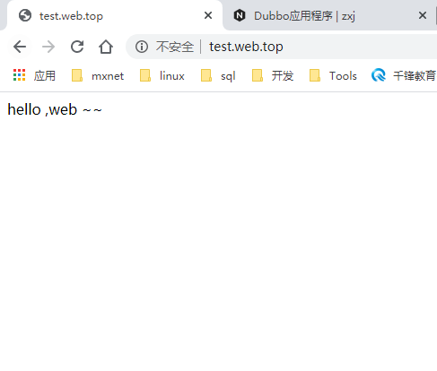

概述
Nginx 是一款高性能的 HTTP 服务器/反向代理服务器及电子邮件（IMAP/POP3）代理服务器。由俄罗斯的程序设计师 Igor Sysoev 所开发，官方测试 Nginx 能够支支撑 5 万并发链接，并且 CPU、内存等资源消耗却非常低，运行非常稳定。
应用场景
- HTTP 服务器：Nginx 是一个 HTTP 服务可以独立提供 HTTP 服务。可以做网页静态服务器。
- 虚拟主机：可以实现在一台服务器虚拟出多个网站。例如个人网站使用的虚拟主机。
- 反向代理，负载均衡：当网站的访问量达到一定程度后，单台服务器不能满足用户的请求时，需要用多台服务器集群可以使用 Nginx 做反向代理。并且多台服务器可以平均分担负载，不会因为某台服务器负载高宕机而某台服务器闲置的情况。
应用场景的实现
统一环境
工作目录
创建工作目录：/usr/local/docker/nginx，配置文件/usr/local/docker/nginx/conf/nginx.conf，docker-compose文件/usr/local/docker/nginx/docker-compose.yml
1 | mkdir -p /usr/local/docker/nginx/conf |
docker-compose.yml
此文件固定内容为
1 | version: '3.1' |
Http服务器
使用nginx实现HTTP服务器。
配置文件
/usr/local/docker/nginx/conf/nginx.conf\
1 |
|
启动、展示
1 | cd /usr/local/docker/nginx/ |
虚拟主机
首先我们需要搞懂什么是虚拟主机
什么是虚拟主机
虚拟主机是一种特殊的软硬件技术，它可以将网络上的每一台计算机分成多个虚拟主机，每个虚拟主机可以独立对外提供 www 服务，这样就可以实现一台主机对外提供多个 web 服务，每个虚拟主机之间是独立的，互不影响的。
通过 Nginx 可以实现虚拟主机的配置，Nginx 支持三种类型的虚拟主机配置
- 基于 IP 的虚拟主机
- 基于域名的虚拟主机
- 基于端口的虚拟主机
这里我们只能演示一下，域名通过修改Hosts来实现。我们做一下后两者的演示，第一种就不演示了
基于端口的虚拟主机
需求
- Nginx 对外提供 80 和 8080 两个端口监听服务
- 请求 80 端口则请求 html80 目录下的 html
- 请求 8080 端口则请求 html8080 目录下的 html
创建目录及文件
在 /usr/local/docker/nginx/wwwroot 目录下创建 html80 和 html8080 两个目录，并分辨创建两个 index.html 文件
配置虚拟主机
修改 /usr/local/docker/nginx/conf 目录下的 nginx.conf 配置文件：
1 | worker_processes 1; |
修改 /usr/local/docker/nginx 目录下的 docker-compose.yml 配置文件：
1 | version: '3.1' |
启动、展示
1 | docker-compose restart |
访问ip:80
访问ip:8080
基于域名的虚拟主机
需求
- 两个域名指向同一台 Nginx 服务器，用户访问不同的域名显示不同的网页内容
- 两个域名是 test.service.top 和 test.web.top
- Nginx 服务器使用虚拟机 192.168.18.132
配置 Windows Hosts 文件
- 通过 host 文件指定 test.service.top 和 test.web.top对应 192.168.18.132虚拟机：
- 修改 window 的 hosts 文件：（C:\Windows\System32\drivers\etc）
创建目录及文件
在 /usr/local/docker/nginx/wwwroot 目录下创建 htmlservice 和 htmlweb 两个目录，并分辨创建两个 index.html 文件
配置虚拟主机
修改 /usr/local/docker/nginx/conf 目录下的 nginx.conf 配置文件：
1 | user nginx; |
修改 /usr/local/docker/nginx 目录下的 docker-compose.yml 配置文件：
1 | version: '3.1' |
启动、展示
1 | docker-compose restart |
访问test.service.top
访问test.web.top

反向代理
想要知道什么是反向代理，首先我们要理解几个概念：代理、正向代理、反向代理。
什么是代理服务器
代理服务器，客户机在发送请求时，不会直接发送给目的主机，而是先发送给代理服务器，代理服务接受客户机请求之后，再向主机发出，并接收目的主机返回的数据，存放在代理服务器的硬盘中，再发送给客户机。
例如：我们想访问谷歌，我们会自己发送请求https://xxx.daili.cn?path=www.google.com
其中xxx.daili.cn就是代理服务器，他去访问谷歌并且将数据返回给我们。

Why
提高访问速度
由于目标主机返回的数据会存放在代理服务器的硬盘中，因此下一次客户再访问相同的站点数据时，会直接从代理服务器的硬盘中读取，起到了缓存的作用，尤其对于热门站点能明显提高请求速度。
防火墙作用
由于所有的客户机请求都必须通过代理服务器访问远程站点，因此可在代理服务器上设限，过滤某些不安全信息。
通过代理服务器访问不能访问的目标站点
互联网上有许多开放的代理服务器，客户机在访问受限时，可通过不受限的代理服务器访问目标站点，通俗说，我们使用的翻墙浏览器就是利用了代理服务器，虽然不能出国，但也可直接访问外网。
什么是正向代理
正向代理，架设在客户机与目标主机之间，只用于代理内部网络对 Internet 的连接请求，客户机必须指定代理服务器,并将本来要直接发送到 Web 服务器上的 Http 请求发送到代理服务器中。
打个比方来说，我们想访问谷歌www.google.com，我们会在浏览器直接请求它的网站，但是我们本地安装了代理软件并且设置了代理服务器地址，他会拦截我们的请求，然后发送请求给代理服务器（连带上我们需要访问的谷歌地址），由它代理访问。
重点在于，正向代理，就是代理软件要和客户机绑定在一起。
什么是反向代理
反向代理服务器架设在服务器端，通过缓冲经常被请求的页面来缓解服务器的工作量，将客户机请求转发给内部网络上的目标服务器；并将从服务器上得到的结果返回给 Internet 上请求连接的客户端，此时代理服务器与目标主机一起对外表现为一个服务器。
重点在于，反向代理，就是反向代理服务器与目标服务器在一个局域网中，由反向代理服务器去与目标服务器交互。一般来说客户机是连接不上目标机的。

反向代理有哪些主要应用？
现在许多大型 web 网站都用到反向代理。除了可以防止外网对内网服务器的恶性攻击、缓存以减少服务器的压力和访问安全控制之外，还可以进行负载均衡，将用户请求分配给多个服务器。
使用Nginx反向代理tomcat
需求
- 两个 tomcat 服务通过 nginx 反向代理
- nginx 服务器：192.168.58.132:80
- tomcat1 服务器：192.168.58.132:9090
- tomcat2 服务器：192.168.58.132:9091
开启tomcat服务器
启动两个 Tomcat 容器，映射端口为 9090 和 9091，docker-compose.yml 如下：
1 | version: '3.1' |
这里将两个tomcat的界面做一个修改，区别一下。先不开开启，一会配置文件修改好了在开启！！！
配置 Nginx 反向代理
修改 /usr/local/docker/nginx/conf 目录下的 nginx.conf 配置文件：
1 | user nginx; |
ps：两个tomcat的项目test需要手动创建，自己区分就行了。我这里就输出了一句话。
启动、展示
1 | docker-compose restart |
访问test.service.top/test
访问test.web.top/test
负载均衡
什么是负载均衡
负载均衡建立在现有网络结构之上，它提供了一种廉价有效透明的方法扩展网络设备和服务器的带宽、增加吞吐量、加强网络数据处理能力、提高网络的灵活性和可用性。
负载均衡，英文名称为 Load Balance，其意思就是分摊到多个操作单元上进行执行，例如 Web 服务器、FTP 服务器、企业关键应用服务器和其它关键任务服务器等，从而共同完成工作任务。
Nginx 实现负载均衡
- nginx 作为负载均衡服务器，用户请求先到达 nginx，再由 nginx 根据负载配置将请求转发至 tomcat 服务器
- nginx 负载均衡服务器：192.168.58.132:80
- tomcat1 服务器
- tomcat2 服务器
注：本次实现反向代理+负载均衡，这时两个tomcat和nginx在一个局域网，我们外部访问不到tomcat
Nginx 配置负载均衡
修改 /usr/local/docker/nginx/conf 目录下的 nginx.conf 配置文件：
1 | user nginx; |
docker-compose.yml
1 | version: '3.1' |
注意我访问路径中的/test是我自己项目，请自己添加。
结果
访问test.web.top，刷新展示不同的内容
相关配置说明
1 | # 定义负载均衡设备的 Ip及设备状态 |
在需要使用负载的 Server 节点下添加
1 | proxy_pass http://myServer; |
upstream：每个设备的状态:down：表示当前的server暂时不参与负载weight：默认为 1weight越大，负载的权重就越大。max_fails：允许请求失败的次数默认为 1 当超过最大次数时，返回proxy_next_upstream模块定义的错误fail_timeout:max_fails次失败后，暂停的时间。backup：其它所有的非backup机器down或者忙的时候，请求backup机器。所以这台机器压力会最轻
Nginx指令
alias
【alias】——别名配置，用于访问文件系统，在匹配到location配置的URL路径后，指向【alias】配置的路径。如：
1 | location /test/ |
即：请求/test/1.jpg（省略了协议与域名），将会返回文件/first/second/img/1.jpg。
root
【root】——根路径配置，用于访问文件系统，在匹配到location配置的URL路径后，指向【root】配置的路径，并把location配置路径附加到其后。如：
1 | location /test/ |
即：请求/test/1.jpg（省略了协议与域名），将会返回文件/first/second/img/test/1.jpg，相较于alias，使用root会把/test/附加到根目录之后。
proxy_pass
【proxy_pass】——反向代理配置，用于代理请求，适用于前后端负载分离或多台机器、服务器负载分离的场景，在匹配到location配置的URL路径后，转发请求到【proxy_pass】配置的URL，是否会附加location配置路径与【proxy_pass】配置的路径后是否有”/“有关，有”/“则不附加，如：
未附加
1 | location /test/ |
即：请求/test/1.jpg（省略了协议与域名），将会被nginx转发请求到http://127.0.0.1:8080/1.jpg（未附加/test/路径）。
附加
1 | location /test/ |
即：请求/test/1.jpg（省略了协议与域名），将会被nginx转发请求到http://127.0.0.1:8080/test/1.jpg（附加/test/路径）。